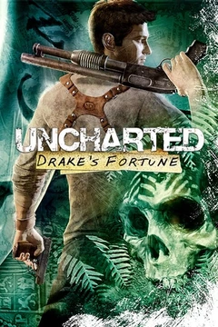
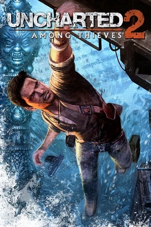
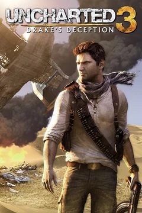
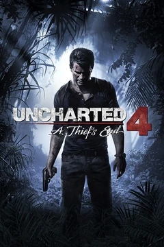

LA HISTORIA DE UNCHARTED
Un viaje epico a través de civilizaciones perdidas, tesoros legendarios y aventuras inolvidables.
LINEA TEMPORAL DE LA SAGA

Drake's Fortune
2007
Nathan Drake sigue los pasos de su supuesto ancestro Sir Francis Drake en busca de la legendaria ciudad de El Dorado. Su aventura lo lleva a una isla misteriosa en el Pacífico.

Among Thieves
2009
La búsqueda de la mítica ciudad de Shambhala y la legendaria Piedra Cintamani lleva a Drake desde las calles de Borneo hasta las montañas del Himalaya.

Drake's Deception
2011
Drake se embarca en la búsqueda de la Atlántida de las Arenas, la legendaria ciudad perdida de Iram. Su viaje lo lleva desde Londres hasta el corazón del desierto.

A Thief's End
2016
Nathan Drake es arrastrado de vuelta al mundo de los ladrones de tesoros cuando su hermano Sam reaparece. Juntos buscan el tesoro del legendario pirata Henry Avery.